Today was quite intersting as we journey to one of the most f*cked up parks on the planet, Bon Bon Land.
Yay!!! We're here!!
So some of you are thinking. How is this park the most f*cked up on the planet? Well, for full details, read the entire update. But let's start out with the parks cast of characters. We've got the crapping seagull, the racing pig, the hippo in a wet diaper, Crqzy Aunt Hen, the snotty bird, the big-eared koala who can stick an log through his head (guess he doesn't have much of a brain), and of course, the star of the show. Henry Hundeprut, the farting dog.
Yes. You read that right. Their main character is a farting dog.
What creative mind thought to themselves one day..."Let's make a theme park based off a farting dog!!"?
Hell, they like Henry so much here that he even has his very own theme song. =)
"Hey everyone. Henry Hundeprut here. Don't forget to like us on Facebook so you can get more dog farts in your newsfeed."
All right. Lets start out ERT on Hundeprutterutchebane.
Translated in English, this ride is literally called the Dog Fart Coaster!!
BEST KIDDY COASTER EVER!!!!!
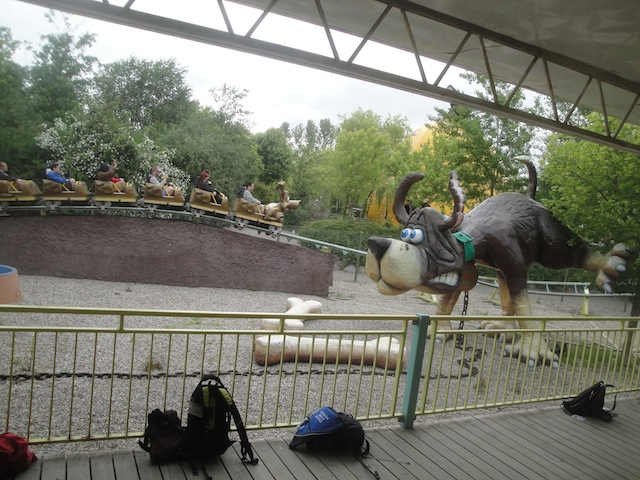
But wait. What's that I see on the Dog Fart Coaster?
Yep. Guess they should call this the Dog Shart Coaster instead.
"Oh No!!! And in front of all these people with cameras!!! This is the most humilating day of my life!!!"
From the top of the lifthill, this doesn't seem like anything special. Just a kiddy coaster.
But then you go through this tunnel and get farted on.
"Well, I can't undo what's been done. Might as well just push the rest of it on out."
Hey, it's not credit whoring if its themed to a dog taking a sh*t on the ground. =)
The Dog Fart Coaster is so strange that photos can't properly do it justice. So here's a raw footage video of the Dog Fart Coaster.
Moving onto coasters less WTFish and more conventinal, we're now having ERT on the Euro Fighter.
How many coasters tell you to keep your head away from the headrest?
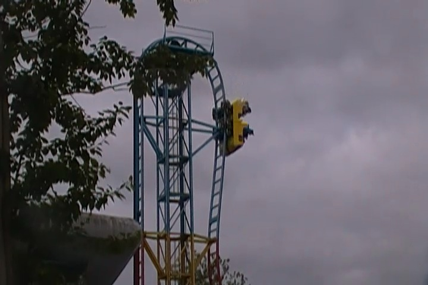
Fun little fact, this was the first Euro Fighter ever made. =)
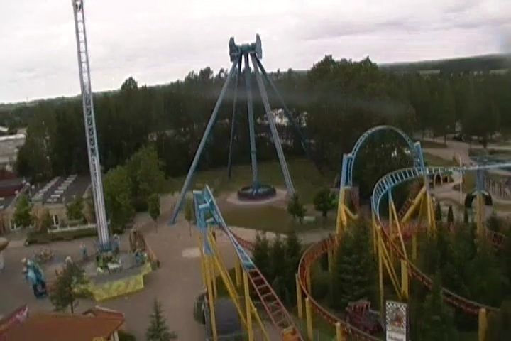
View you get from the top of the vertical lifthill before getting yanked down.
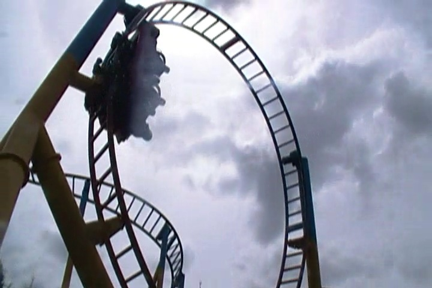
Hey, it may not be as twisty as all the other Euro Fighters, but this one still has a good old-fashioned vertical loop.
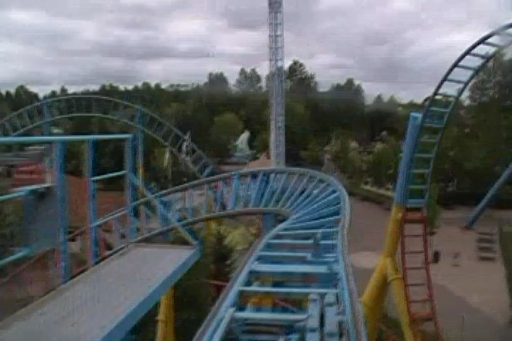
Its a very fun ride and definetly much smoother than I was expecting the worlds first Euro Fighter to be. Check it out when you go to Bon Bon Land.
Continuing on with ERT, we're now moving onto the parks spinning coaster. Themed of course to cats coughing up hairballs.
Come on guys. You're gonna have to cough up way more hairballs to beat us!!
Another fun little fact about Han-Katten. It's actually a clone of Tony Hawk @ SFDK (now relocated to Six Flags Mexico).
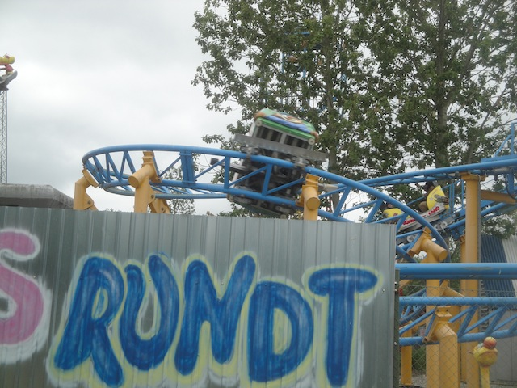
Sitting with the right people, you can really make this thing spin.
Not much airtime on that little hill, but man does it get you spinning.
And since we ended up getting ERT on all four coasters on the park, we moved onto Vikto Vandorm.
Gee. Is that train long enough for us?
While Dog Fart Coaster is a kiddy coaster, this is much bigger and also not credit whoring.
Hows it going everyone!!?
"Hey. Now I can put worked with construction equipment on my resume."
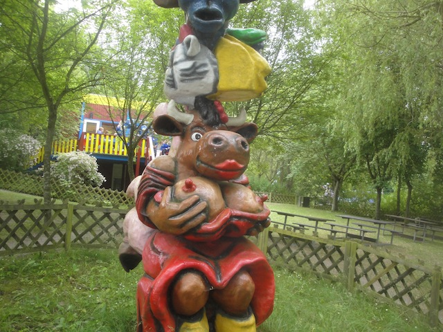
Speaking of characters in the park, another one who used to be in the main cast was Betty Babs, the topless cow. Sadly, she's not a full member of the family anymore since...yeah. But if you look around Bon Bon Land, you can still see her in random places.
Amd just like Henry Hundeprut, she has her very own theme song.
Seagulls eating a giant rotting fish. Just typical theming at Bon Bon Land.
Disney Parks have hidden mickeys that you look for. And then Bon Bon Land has hidden cow boobs that you look for. =)
If there's an obstacle course nearby, we have to do it.
How the hell did I get trapped up here?
Come on Nolan. Squeeze yourself out of the slide.
What's the code for kid climbing on top of slide?
"Don't mind my friend right here. He snorted one too many dog farts and is paying the price."
Oh look. They have paddle boats here. That's about the most normal thing I've seen all day.
Gotta pee during your visit to Bon Bon Land? Just find the peeing ant and you'll be peeing together in no time.
Or if you're a woman, just look for this pig.
Yes America, you've offically been beat. Denmark has bigger ice cream cones than you. I know, I'm as shocked as you are. And yeah. That ice cream is really freaking good. But yeah, with that much ice cream and my head being smaller than Nolans, it did not turn out well.
Drunken Turtle Chairswings. Only at Bon Bon Land. =)
Oh god. We're gonna see Bon Bon Land's take on It's a Small World. This is certainly gonna be interesting.
First stop, Bird Eskimoes. Very interesting.
Yay!! I'm heading back to my home country!!
I have yet to see any place like this in all of the United States.
Well, at least they're accurate about the guns being everywhere.
Something tells me that this totally politically incorrect scene is supposed to be some African Country.
Knowing the Bon Bon Land characters, I would not recommend eating them Mr. Alligator.
Yay!!! We're moving onto the Asia Region now.
Am I going crazy or does that dragon look suspicously like Mushu from Disney's Mulan?
Why do I get the feeling the giant seagull is going to poop on us?
And thanks to all of our weight, we sunk the boat and ended up stuck with all these lovely characters.
I think you all see what's so special about this Cowboy Town Sign.
There's no real need for me to post this close up, I just wanted to. =)
Cowboy Town is pretty much just some playgrounds. Nothing special.
Dammit Ceaser!! Nobody wants to see your ass!!
Tell me. Is Betty Babs gonna be our chef for lunch or our waitress? =)
Man, these Zamperla Giant Frisbees are GREAT!!! Considering how Huss is out of buisness, I really hope these carry on as the Giant Frisbees of the future.
Loop shot of Vild Svinet.
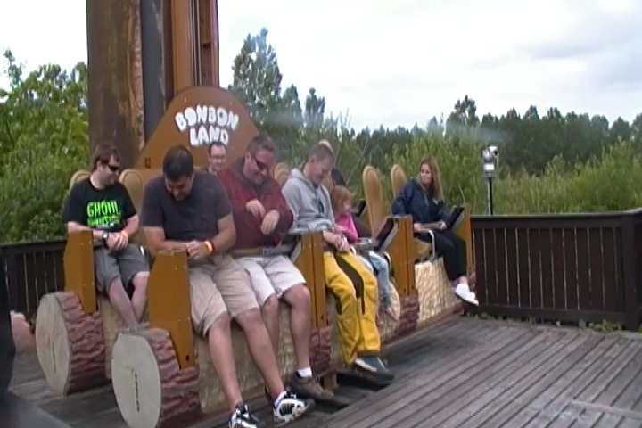
Bon Bon Land has a very...intersting and unique drop tower. Now as you know, I'm HUGE on preventing ride spoilers from leaking out and keeping things a surprise. But as soon as people tried keeping this a secret from me, just saying "It's just like the one at Tripsdill." Right then, I knew EXACTLY what this ride does, cause this isn't exactly an easy gimmick to hide. I mean, its not like Winjas where its all indoors, in the dark, and I can easy keep that a secret. I had no idea what its effects were until I rode it. But I wasn't even planning on keeping this a secret until I found out everyone else had no idea what this ride did and their shock about its gimmick really made me happy and wish I didn't know. So I'm gonna keep it a secret even though just looking at photos of the ride, or possibly the park website will spoil it for you like it did for me.
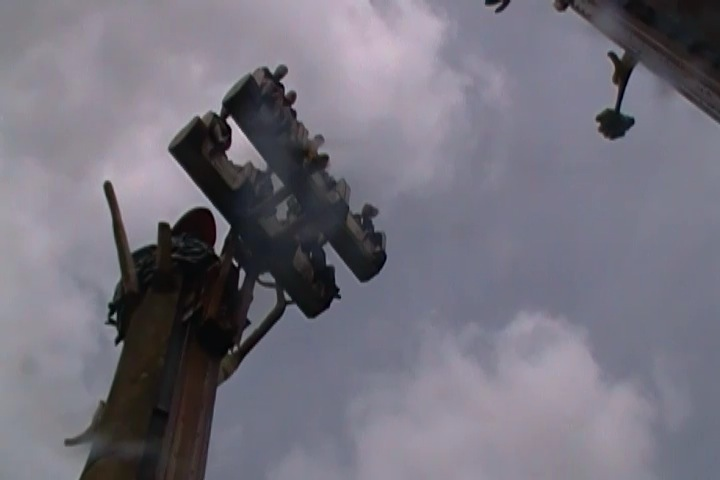
WARNING: If you look closely in this photo, you'll see the gimmick. Scroll down and don't pay attention to this photo (if don't already know) if you want to be surprised.
Meh. After the mini gimmick tower, this bores me.
A rapids ride themed to Hipster Beavers? I'm not surprised in the least bit.
Hey. It was a fun rapids ride. Even if none of us got wet. =)
Sour Potty Candy. Knowing this park, I'm not that shocked.
Introducing Henry Hundeprut cushions!!! Take one of these cushions and now, with this and a little imagination, you can turn any kiddy coaster into the Dog Fart Coaster.
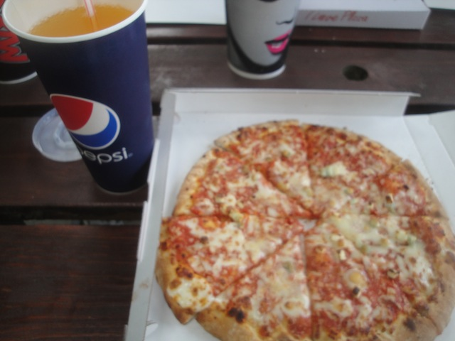
While I loved everything at Bon Bon Land so far, they had the worst food on the trip. Sorry, but this pizza was...not good. Let's just leave it at that. You won't be seeing Bon Bon Land on our Top 10 Theme Park Dining Options List any time soon.
I do not want to be the guy who has to change that trash can.
This carousel used to run and you could ride on all the crazy characters in the park.
Notice the empty spot where it feels like someone should be here? Yeah, this was Betty Bab's spot. =(
Of course. How could we have gone so long without mentioning the vomiting rat.
If this pirate ship doesn't have boobs or some gross bodily function theming, then I'm bored.
And of course, we had to check out their log flume to gluttenous rats getting sick.
Eew. I don't want what came out of the rat splashing into my boat.
Ooh. Gun violence. But wait. I thought we were in Denmark and not Texas.
If you think we're too mature to ride this ride, you obviously haven't been paying attention to all the childish toilet humor we've been pointing out in this update.
That duck blowjob joke has been so many times that it's become a cliche at this point.
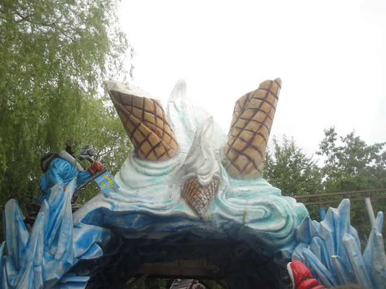
Seagull Cycle ride going through some ice cream.
There we go. I knew the Seagull was gonna crap on us sooner or later.
Good luck fitting inside here Nolan.
In case you didn't know, Bon Bon Land was originally based off the Bon Bon candy company, much like how Knotts Berry Farm is based off Knotts Jam and Chicken Dinner Resteraunt. And just like the park, the candies have totally mature themes, including Seagull Poop Candy, Rat Vomit Candy, and Rotting Fish Candy.
Am I the only one who senses a problem with an open flame being near Henry Hundeprut?
Located right by the front of the park is Fantasy World. A doll exhibit that's just a lot of fun to check out for if you've done everything or the weather is really ugly.
There may not be any dog farts or cow tits in here, but look closely and plenty of bizarreness can be found.
Yes, that is accurate. Mrs. Claus did cut off Santa's feet so she could use them as gloves. This is the kind of stuff I write about. =)
"Well, since Mrs. Claus took my feet, I'm gonna need your hands for feet."
Mess with me and I'll poke your eye out.
Ok. All the Loony Tunes seem normal in comparison to the Bon Bon Crew.
"HENRY HUNDEPRUT IS GOING TO BLOW!!!!"
Why is the peeing ant in a turban right here?
Might as well get one last ride on Vild Svinet before leaving.
Fun little Euro-Fighter. Glad many more popped up after this one.
Racing Pig would like to thank you for your visit to Bon Bon Land today.
Well, we're on our way out of Denmark (Don't worry. We'll be back real soon). Enjoying the view of the windmills.
Driving our bus onto the ferry that is going to carry us to Germany.
Good bye Denmark!! See you tomorrow evening!!
This is the first of three ferries on the trip, and this one is the smallest. Not much to do on this one, but at least its just an hour of enjoying the view of the Danish Straights.
Yay!! We made it to our hotel in Germany!!
Now the hotel was so small that half of us had to stay in the guest houses. Hey, I didn't mind. I really liked them.
Doesn't look like much, but that little thing right there is an automatic lawn mower. Why these things haven't caught on in America, I don't know.
Mmm. We were served a very hearty meal of Bratswurst and German Beer. I love Germany.
The hotel felt the need to plaster all our tables with American Flags. Gee, I wonder why? =)
Sorry Henry Hundeprut. You're not welcome in Germany.
After dinner, a group of us decided to explore the town. But the hotel basically is the town. So we're following the only road and just marching on. If we keep up this pace, we'll be in Poland by morning.
♫ Do you wanna make a Crop Circle? ♫
We made it!!! We have arrived at a random farm with cows!!! Now lets go back to the hotel bar to do shots!!